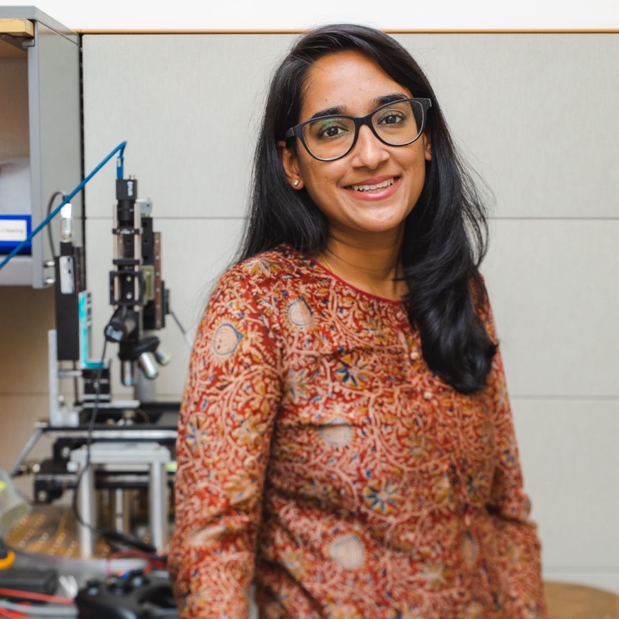

People
PI

Staff Scientist, Molecular Foundry ↗
Faculty, Kavli Energy NanoScience Institute ↗
Lawrence Berkeley National Laboratory
Archana Raja
I am a Staff Scientist at Lawrence Berkeley National Laboratory. I study how interfaces control the flow and transformation of energy, charge, and information in quantum materials. Interfaces are where light becomes charge, where charge transfers energy to the lattice, and where spin and other carriers of information are processed.
My team pairs optical spectroscopy and microscopy with ultrafast electron diffraction and electron energy-loss spectroscopy to study interfaces as they really are, with their defects, strain, disorder, and atomic reconstruction. AI extends this approach. As multimodal datasets grow richer, the challenge shifts from acquiring complementary measurements to interpreting them together and deciding what to measure next.
I earned my PhD in Chemical Physics at Columbia University with Tony Heinz and Louis Brus, and my integrated MSc in Chemistry at IIT Bombay, where I received the Institute Silver Medal. I held postdoctoral appointments at Stanford University and at UC Berkeley, the latter as a Heising-Simons Junior Fellow.
Honors · LBNL Director's Award for Exceptional Early Scientific Career (2023) · Early Career LDRD Award (2020–22) · Heising-Simons Junior Fellowship, Kavli ENSI (2017–19) · IIT Bombay Institute Silver Medal
In the Press
The Kavli Network Effect: Archana Raja ↗The Kavli Foundation · How a Heising-Simons Junior Fellowship at Kavli ENSI shaped my multi-scale research on 2D materials.
Staff scientists in academia and government labs follow rewarding careers ↗Physics Today · What my role as a staff scientist looks like at the Molecular Foundry.